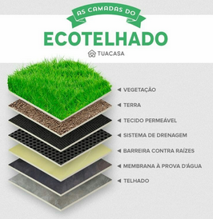

Atualmente estou trabalhando num projeto de "Upx" relacionado a sustentabilidade. Para tal, eu e o meu grupo decidimos desenvolver um protótipo para um telhado verde, destinado a um médio agricultor, visando reduzir o consumo de água e energia.
Funcionamento: o telhado verde contará com um mecanismo de escoamento que levará a água de chuvas para um tanque, assim, sendo reutilizada, por meio da irrigação, no próprio telhado verde ou nas plantações conforme o sensor de umidade trabalharar.
Energia: o projeto contará com um painel solar que conectará com todo o sistema, transformando-o "auto-suficiente". Ademais, com o telhado verde, a temperatura da casa diminuirá e a umidade aumentará, evitando gastos com ventiladores e ar-condicionado.
Água: como dito, não haverá gastos desnecessários com água devido ao reaproveitamento da mesma com chuvas.
Automoção: o sistema terá um aplicativo junto a ele que se conecta por meio de uma nuvem com base no microcontrolador usado, desse modo, podendo monitorar a temperatura, umidade do solo e nível do tanque.